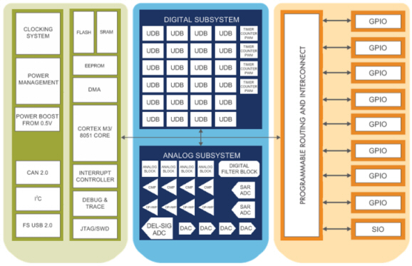

What is PSoC®?
PSoC is Cypress's scalable Programmable System-on-Chip platform for 8-, 16-, and 32-bit applications. PSoC combines user-programmable precision analog and digital logic with high performance MCU sub-systems.
Cypress's new PSoC3 and PSoC5 families offer the world's first fully programmable embedded platform, delivering unmatched flexibility, integration, and performance.
The following shows the complete block diagram of a PSoC3/5 device.
